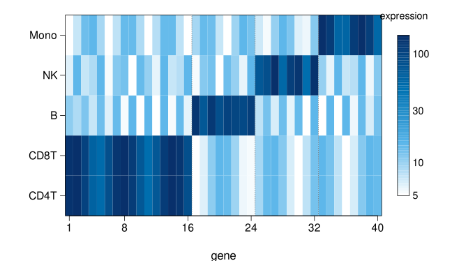
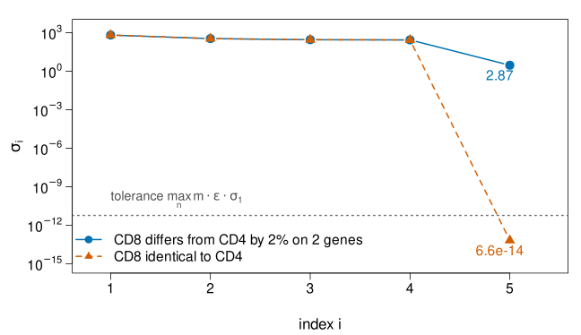
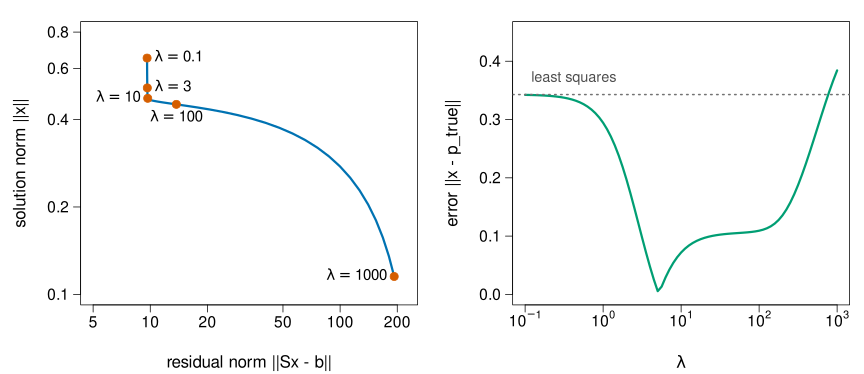
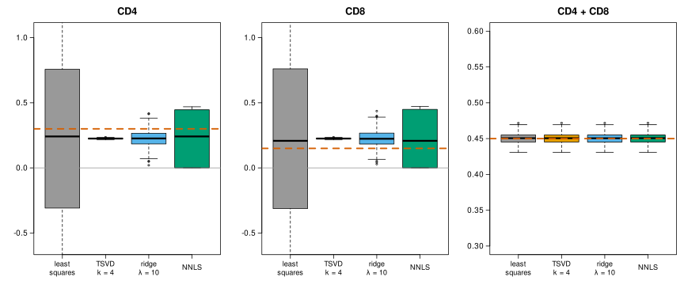

In Least squares: normal equations vs QR we solved \min_x \|Ax - b\| with QR and assumed the columns of A were clearly different. This lecture is about what happens when they are not.
The singular value decompositionA = U\Sigma V^T: every matrix is a rotation, a stretch along the axes, and another rotation.
The singular values\sigma_i give the condition number and the numerical rank. Small \sigma_i mark combinations of parameters the data cannot pin down.
Least squares through the SVD shows where noise is amplified: by 1/\sigma_i.
Three remedies: the pseudoinverse, the truncated SVD, and Tikhonov (ridge) regularisation, and how to choose \lambda (the L-curve).
Non-negative least squares for quantities that cannot be negative.
Biology: estimating cell-type proportions from bulk RNA-seq, when two cell types (CD4 and CD8 T cells) have almost the same expression profile.
A biology problem: what is in this tissue?

A signature matrixS (genes × cell types) holds the expression of each gene in each pure cell type.
A bulk sample is a mixture: b \approx S p, with p the proportions of the cell types. Given S and b, find p.
40 genes, 5 cell types: an overdetermined least-squares problem. But the CD4T and CD8T columns differ by 2 % on 2 genes.
The simulated signature and bulk sample
g <-1:40# 40 genesS <-matrix(10, nrow =40, ncol =5,dimnames =list(NULL, c("CD4T", "CD8T", "B", "NK", "Mono")))S[1:16, 1:2] <-100# T-cell genes, high in both T typesS[cbind(17:40, rep(3:5, each =8))] <-100# 8 marker genes each for B, NK, MonoS <- S * (1+0.5*sin(outer(g, 1:5))) # gene-to-gene variationS[, "CD8T"] <- S[, "CD4T"] # CD8 = CD4 ...S[1, "CD8T"] <-0.98* S[1, "CD4T"] # ... except 2% lower on gene 1S[2, "CD8T"] <-1.02* S[2, "CD4T"] # and 2% higher on gene 2p_true <-c(0.30, 0.15, 0.15, 0.10, 0.30)b <-drop(S %*% p_true) * (1+0.05*sin(37* g)) # 5% "noise"
The “noise” is a fixed pattern of size 5 %, so the numbers on the slides are reproducible. Random noise comes later.
Least squares gives a negative cell type
x <-qr.solve(S, b) # least squares by QR (previous unit)round(x, 3)# CD4T CD8T B NK Mono# 0.543 -0.092 0.149 0.099 0.299sqrt(sum((b - S %*% x)^2)) # residual of the least-squares fit# [1] 9.621707sqrt(sum((b - S %*% p_true)^2)) # residual of the TRUE proportions# [1] 9.707244
B, NK and monocytes are within 0.001 of the truth. CD4 is 0.54 (truth 0.30) and CD8 is −0.09 (truth 0.15).
The wrong answer fits the data better than the truth. No amount of iterating or pivoting fixes this: the data do not contain the information.
QR did its job. The problem is ill-conditioned; we need a tool that shows which part of p is undetermined.
The condition number\kappa(A) bounds how much a relative error in b is magnified in x: \;\dfrac{\|\delta x\|}{\|x\|} \lesssim \kappa(A)\,\dfrac{\|\delta b\|}{\|b\|}.
Rule of thumb: lose about \log_{10}\kappa digits. That counts rounding errors and measurement errors.
The normal equations A^TA x = A^Tbsquare\kappa; QR does not. So we used QR.
kappa(S, exact =TRUE)# [1] 223.6613
With 5 % noise and \kappa \approx 224, the bound allows a relative error in x of up to 224 \times 0.05 \approx 11. QR cannot help: the trouble is in the problem, not the algorithm.
The singular value decomposition
Every m \times n matrix A (here m \ge n) can be written
A = U \Sigma V^T = \sum_{i=1}^{n} \sigma_i\, u_i v_i^T
V (n\times n): orthonormal columns v_i, directions in parameter space (here: combinations of cell types).
Forming A^TA squares the condition number: \sigma_2^2 = 10^{-18} is below the rounding error of the entries (\approx 10^{-16}) and is lost. The small singular value comes out 20 times too large.
Same lesson as the normal equations: work with A, not A^TA. LAPACK’s SVD does that (it first reduces A by orthogonal transformations, like QR).
The singular values of our signature
sv <-svd(S)sv$d# [1] 642.934939 340.639955 278.842837 269.081951 2.874591sv$d[1] / sv$d[5] # = kappa(S, exact = TRUE)# [1] 223.6613round(sv$v[, 5], 3) # the direction that is squashed# [1] 0.707 -0.707 0.000 0.000 0.000
Four singular values of a few hundred, then a gap to 2.87. \kappa = \sigma_1/\sigma_n.
v_5 = \tfrac{1}{\sqrt2}(1, -1, 0, 0, 0): “more CD4, less CD8”. Changing p by t\,v_5 changes Sp by only 2.87\,t.
The singular vectors name the problem: the data barely see the CD4 − CD8 difference. They see CD4 + CD8 fine.
Numerical rank

Make CD8 identical to CD4: exact rank 4, but \sigma_5 = 6.6\times10^{-14}, not 0. Rounding makes every matrix full rank on paper.
Numerical rank = number of \sigma_i above a tolerance. Default: \max(m,n)\,\varepsilon\,\sigma_1 = 5.7\times10^{-12} → rank 4.
For measured data the useful tolerance is the noise level, not \varepsilon: by that standard \sigma_5 = 2.87 is also “zero”.
Exact rank deficiency: what R does
S0 <- S; S0[, "CD8T"] <- S0[, "CD4T"] # CD8 identical to CD4qr(S0)$rank# [1] 4coef(lm(b ~ S0 -1))# S0CD4T S0CD8T S0B S0NK S0Mono# 0.45135405 NA 0.14888175 0.09887964 0.29860311qr.solve(S0, b)# Error in qr.solve(S0, b) : singular matrix 'a' in solve
lm detects the rank deficiency (pivoted QR), drops CD8 and gives all of the T cells to CD4: one of infinitely many solutions.
Filter factorsf_i: \approx 1 for \sigma_i \gg \lambda (keep), \approx 0 for \sigma_i \ll \lambda (damp).
TSVD is the step function; ridge is a smooth step at \sigma = \lambda.
Our \sigma’s (ticks): any \lambda between about 5 and 100 damps \sigma_5 and keeps the rest.
Ridge in code: two routes
ridge <-function(A, b, lambda) { s <-svd(A) f <- s$d^2/ (s$d^2+ lambda^2) # filter factorsdrop(s$v %*% (f *crossprod(s$u, b) / s$d))}round(ridge(S, b, lambda =10), 3)# [1] 0.250 0.201 0.149 0.099 0.298lambda <-10# same thing as a stacked least squaresx_aug <-qr.solve(rbind(S, lambda *diag(5)), c(b, rep(0, 5)))round(x_aug, 3)# CD4T CD8T B NK Mono# 0.250 0.201 0.149 0.099 0.298
Ridge is ordinary least squares on the stacked system \begin{pmatrix}A\\ \lambda I\end{pmatrix}x \approx \begin{pmatrix}b\\0\end{pmatrix}, so QR works too, without the SVD.
Do not solve (A^TA + \lambda^2 I)x = A^Tb for small \lambda: that is the normal equations again.
Choosing \lambda: the L-curve

L-curve (left): residual norm against solution norm for many \lambda, log–log. Small \lambda: \|x\| grows, fit barely improves. Large \lambda: fit gets worse fast. Pick the corner (\lambda \approx 10).
Failure (right): too large a \lambda shrinks everything towards 0. At \lambda = 100 the proportions sum to 0.96, at 300 to 0.74.
Alternatives: the discrepancy principle (residual ≈ noise), generalised cross-validation, cross-validation.
Try it: bias against noise
Proportions cannot be negative: NNLS
\min_x \|Ax - b\| \quad \text{subject to} \quad x_j \ge 0 \text{ for all } j
Active-set idea (Lawson–Hanson, 1974):
Start with every x_j = 0 (all “held at the bound”).
Free the variable whose increase would reduce the residual fastest (largest a_j^T(b - Ax)).
Solve ordinary least squares on the free variables. If some go negative, step back until the first one hits 0, and hold it at 0.
Repeat until no held variable wants to increase.
Each step is a small least-squares problem (QR, as in the previous unit). It ends after finitely many steps.
Used, with variations, by deconvolution tools (EPIC and quanTIseq use constrained least squares; MuSiC uses weighted NNLS).
But it puts all T cells in CD4 and none in CD8. A clean-looking answer, confidently wrong.
Least squares wanted CD8 = −0.09; NNLS moved to the nearest feasible point along v_5: CD8 at the bound, CD4 + CD8 kept.
The check: refit with new noise

500 bulk samples from the samep, each with fresh 5 % random noise. Standard deviations: least squares 0.86 (CD4), ridge 0.065, NNLS 0.21, TSVD 0.004. CD4 + CD8: 0.007 for all four.
NNLS sets CD8 = 0 in 38 % of the replicates and CD4 = 0 in 37 %. TSVD is stable but biased (0.225 each).
Check: perturb the data (bootstrap genes, or add noise of the measured size) and refit. Quantities that jump are not determined.
Checklist: rank trouble in a least-squares fit
Look at svd(A)$d before trusting coefficients. A gap, or a \sigma_n near the noise level, means some combination is not determined.
Read the smallest right singular vectorsv_n, v_{n-1}: they name the confounded parameters (here CD4 − CD8).
NA coefficients in lm, or a “singular matrix” error → exact collinearity.
Negative or huge estimates that should be positive and moderate → ill-conditioning, not biology.
Refit with perturbed data: estimates that jump are not identifiable; report the combinations that are stable (sums, differences along large \sigma).
Regularise knowingly: TSVD or ridge trade noise for bias. Pick k or \lambda from the residual (L-curve, discrepancy principle), and say that you did.
Constraints are not regularisation: NNLS hides the symptom but not the cause.
Aside: PCA is an SVD
Centre the data matrix X (samples × genes) by columns. Then X = U\Sigma V^T gives the principal axesv_i, the scoresU\Sigma, and the variance explained \sigma_i^2/(n-1).
prcomp does exactly this (it calls svd, not eigen of the covariance matrix, for the reason on the A^TA slide).
The truncated SVD is the best rank-k approximation of a matrix (Eckart–Young): keeping the top k PCs is TSVD of the data.
For a large sparse cells × genes matrix, compute only the top k singular triplets with irlba (Python: scipy.sparse.linalg.svds), as in How eigen() works, and big problems.
The statistics of PCA (scaling, interpretation, biplots) are in the sister course.
Summary
SVDA = U\Sigma V^T: rotate (V^T), stretch by \sigma_i, rotate (U). Av_i = \sigma_iu_i. Compute it with svd(), not via A^TA.
\|A\|_2 = \sigma_1, \kappa = \sigma_1/\sigma_n. Numerical rank = number of \sigma_i above a tolerance: \max(m,n)\varepsilon\sigma_1 for rounding, the noise level for data.
Least squares: x = \sum_i (u_i^Tb/\sigma_i)\, v_i. Noise is amplified by 1/\sigma_i; the small-\sigma directions v_i name what is not determined.
Pseudoinverse: minimum-norm solution, drops zero \sigma_i. Truncated SVD: drops \sigma_i below the noise. Ridge: filter factors \sigma_i^2/(\sigma_i^2+\lambda^2); choose \lambda at the corner of the L-curve. Both trade noise for bias.
NNLS (nnls, scipy.optimize.nnls) enforces x \ge 0 by an active set, but does not resolve an undetermined split.
Deconvolution: CD4 + CD8 is well determined, the split is not. Check with the singular values and by refitting perturbed data.